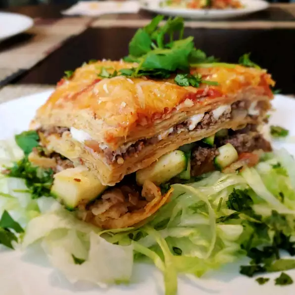

Lasagna

Description
Delicious and easy to make mexican lasagna!
Ingredients
- 500g lean ground beef
- 1(30g) package taco seasoning mix
- 1(400g) can peeled and dice tomatoes with juice
- 1(2.5cm) corn tortillas
- 1 cup prepared salsa
- ½ cup shredded Colby cheese
Steps
- Preheat oven to 350 degrees F (175 degrees C).
- In a large skillet over medium-high heat, brown the ground beef, and stir in the taco seasoning and tomatoes.
- Line a 9x13-inch baking dish with half the tortillas.
- Spoon the beef mixture into the dish, then top with the remaining tortillas.
- Spread salsa over the tortillas and sprinkle with the cheese.
- Bake at 350 degrees F (175 degrees C) for 20 to 30 minutes, or until cheese is melted and bubbly.